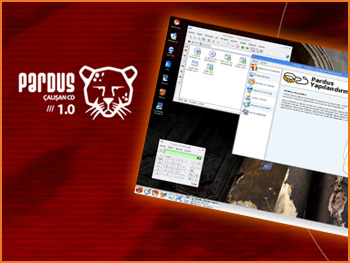

|
|
 The first product of Ulusal
Dağıtım Project has been released:
Pardus Live CD
Pardus Live CD, bootable CD
version of Pardus National Operating System, has been announced and
distributed to participiants in Academic Computing 2005
organized in Gaziantep.
Live CD includes office tools (word processor, spreadsheet editor,
presentation tool,
vb.), internet tools (browser, e-mail client, chat, vb.), multimedia
and graphic tools (movie player, music player, vb.), games and
lots of other applications.
At Open Source Days,
organized by İstanbul Bilgi University, information about Pardus has
been given to participiants and Pardus
Live CD 1.0 has been distributed.
Currently,
Web page translation work has begun for English language. We are
planning to finish this work as soon as possible.
Please try again and thank you for your understanding.
Pardus is an
open source operating system and freely distributed under the terms of
GNU General Public License. This
arbitrament was announced in Uludağ Weekly Newsletter published at
2005-01-30.
|